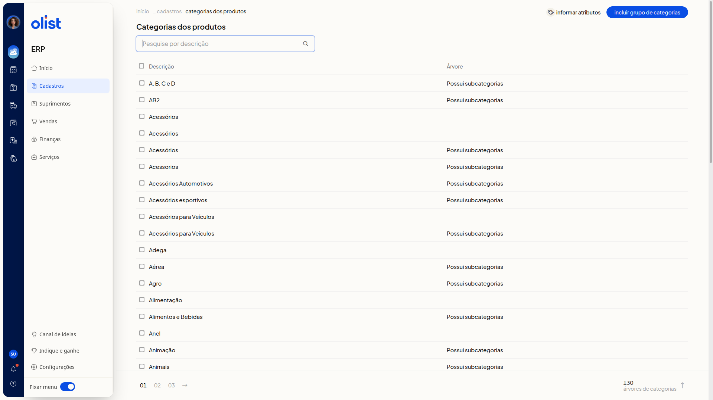
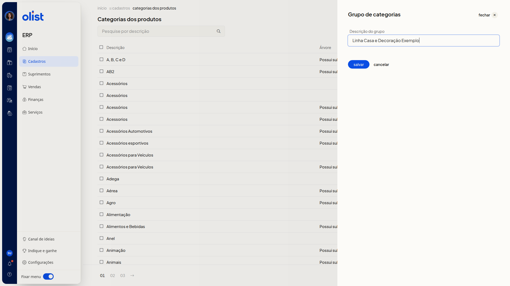
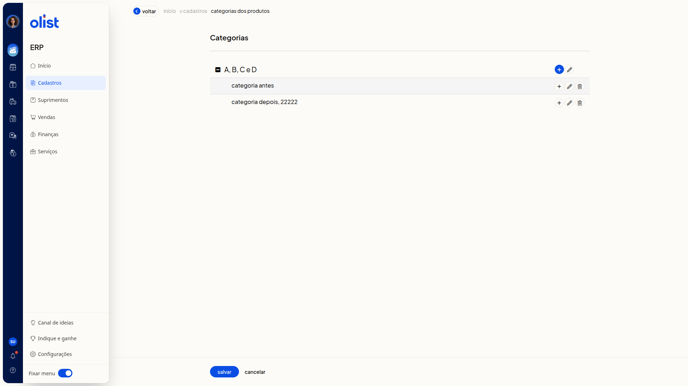
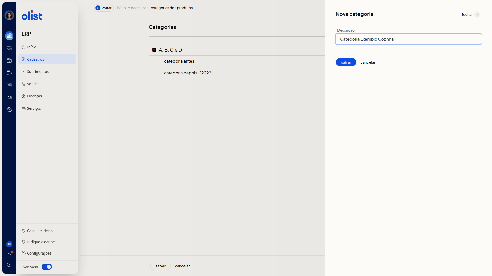
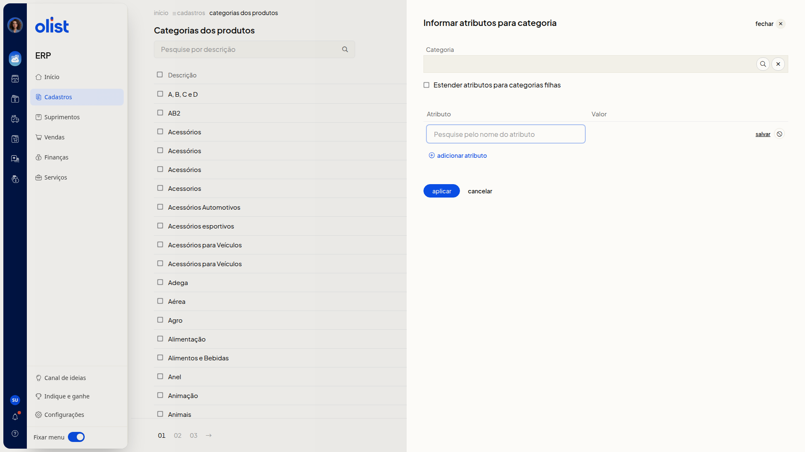

Categorias dos produtos
Descrição
No ERP da Olist, você organiza os produtos em grupos de categorias. Na lista, você pesquisa pela descrição, inclui um grupo e abre a árvore para incluir, editar ou excluir categorias. Na mesma lista, você vincula atributos a uma categoria e pode estender esses atributos às categorias filhas.
Para abrir a lista, acesse o menu lateral Cadastros > Categorias dos Produtos. As colunas Descrição e Árvore mostram os grupos de categorias.
Pré-requisitos
- Você precisa estar no ERP, com o menu Cadastros disponível.
- Você precisa da permissão de Categorias dos produtos para acessar a tela.
- Para organizar categorias dentro de um grupo, o grupo já precisa constar na lista.
Importante
- É necessário informar a descrição do grupo para incluir o grupo de categorias.
- É necessário informar a descrição para incluir ou editar a categoria.
- Não é possível informar o mesmo atributo mais de uma vez.
Instruções
Incluir um grupo de categorias
-
Acesse Cadastros > Categorias dos Produtos no menu lateral.

-
Clique em Incluir grupo de categorias.
-
Preencha Descrição do grupo. É necessário informar a descrição para incluir o grupo.

-
Clique em salvar para concluir o cadastro do grupo.
Incluir uma categoria na árvore
-
Acesse Cadastros > Categorias dos Produtos no menu lateral.
-
Clique na descrição do grupo na lista.

-
Clique em Incluir categoria no nó em que a nova categoria deve ser criada.
-
Preencha Descrição. É necessário informar a descrição para incluir a categoria.

-
Clique em salvar para concluir o cadastro da categoria.
Editar uma categoria
- Acesse Cadastros > Categorias dos Produtos no menu lateral.
- Clique na descrição do grupo na lista.
- Clique em Editar categoria no nó desejado.
- Altere Descrição, que abre já preenchida com o texto atual. É necessário informar a descrição para editar a categoria.
- Clique em salvar para concluir a edição.
Informar atributos para uma categoria
-
Acesse Cadastros > Categorias dos Produtos no menu lateral.
-
Clique em Informar atributos.

-
Busque a categoria no campo Categoria.
-
Clique em Buscar categorias ou em Limpar categorias se precisar ajustar a busca.
-
Marque Estender atributos para categorias filhas se quiser replicar os atributos nas categorias filhas.
-
Pesquise o atributo pelo nome na coluna Atributo.
-
Informe o valor na coluna Valor.
-
Acesse o link adicionar atributo se quiser incluir outra linha.
-
Clique em aplicar para concluir.
Informações adicionais
A coluna Árvore indica subcategorias
Na coluna Árvore, o texto Possui subcategorias aparece quando o grupo tem categorias filhas.
A pesquisa localiza o grupo pela descrição
No campo Pesquise por descrição, pesquise o grupo pela descrição. Você pode percorrer a lista pela paginação.
A árvore reúne as categorias do grupo
A árvore mostra o grupo e as categorias filhas recuadas. Em cada nó há Incluir categoria, Editar categoria e Excluir categoria. Voltar retorna à lista de categorias.
Cancelar não grava o preenchimento
No grupo, cancelar fecha o painel e a descrição preenchida não entra na lista. Na nova categoria, cancelar fecha o painel sem incluir a categoria. Na edição, cancelar fecha o painel e a descrição exibida na árvore permanece a anterior.
Links relacionados
Se precisar de ajuda com categorias dos produtos, fale com o suporte.